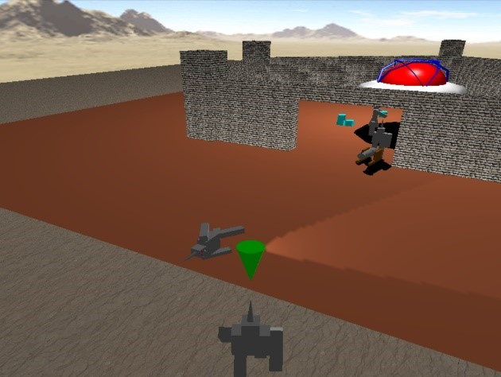
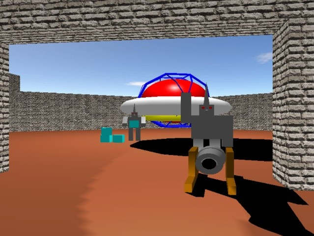
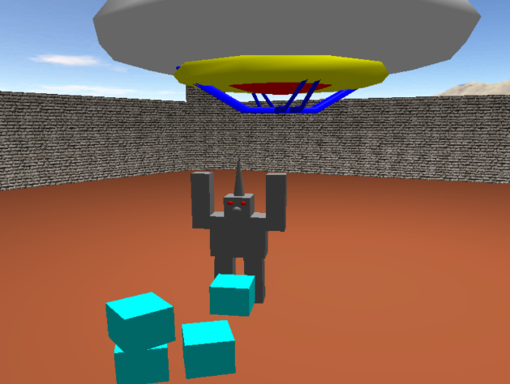
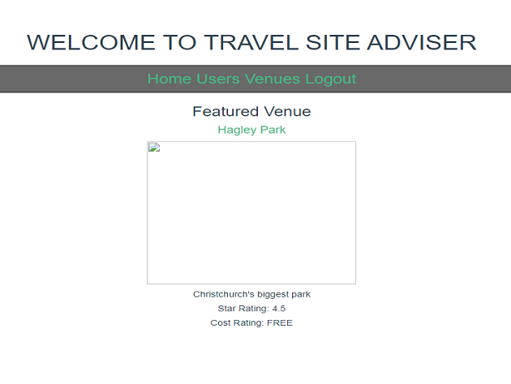
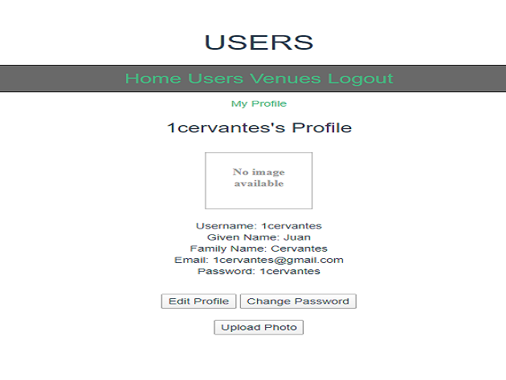
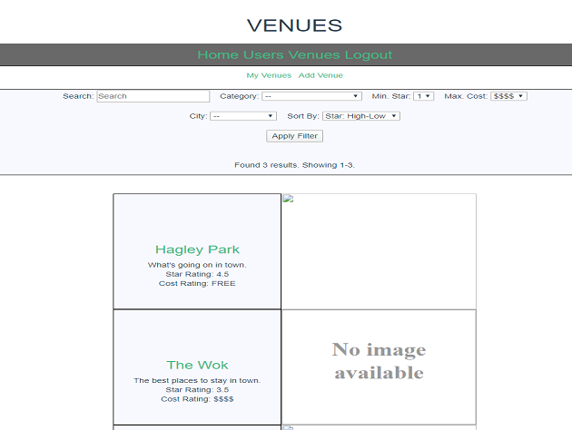
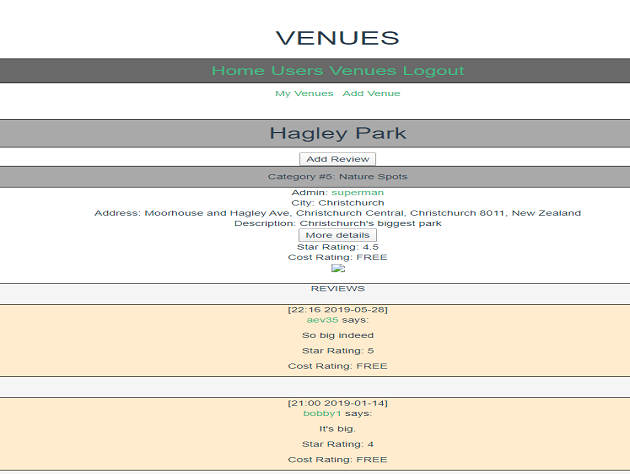
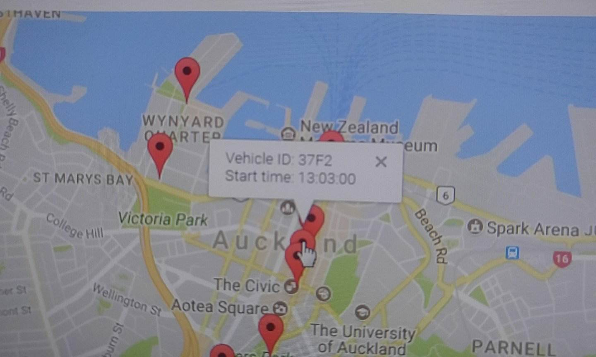
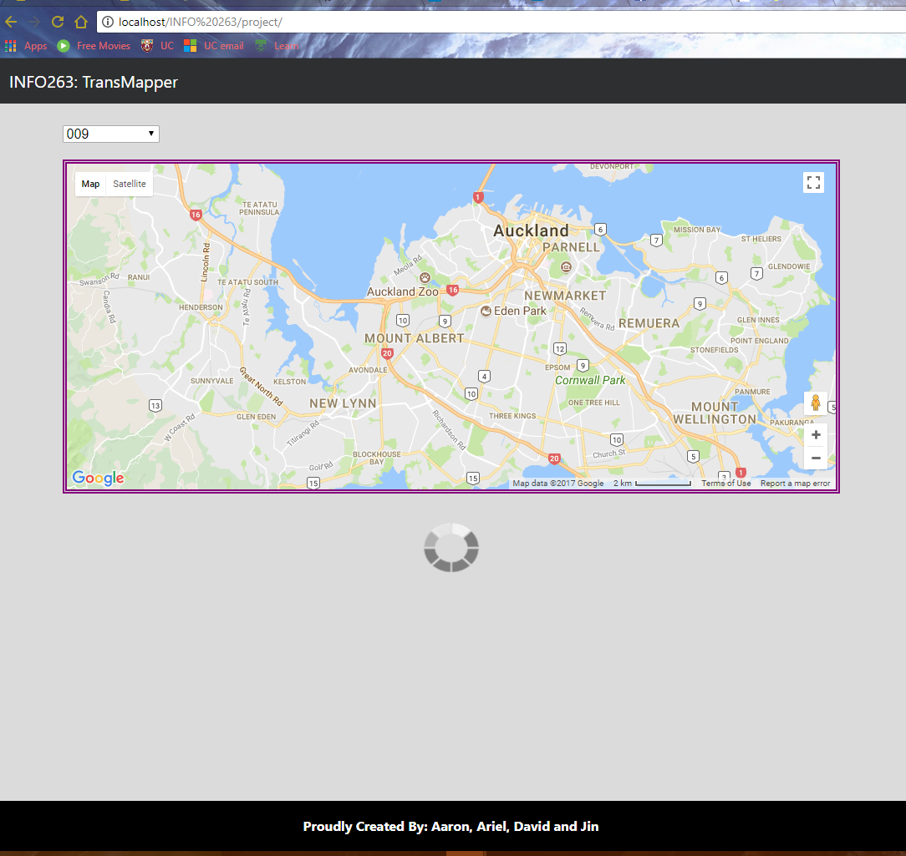

Alien Invasion Project:
Written in OpenGL, C++ using Visual Studio (Windows) and Geany (Linux). All codes used were basic GLUT functions and non-complex.
This project was alot of fun because I am dreaming about 3D graphics and animation since childhood so this was dream fulfilled for me.
  
Travel Site Advisor:
The project was created with MVVM (Model View ViewModel) pattern using NodeJS, VueJS, Javascript, HTML, and CSS using JetBrains Webstorm IDE and Postman for testing.
It also used a free online database hosted by University of Canterbury which was now offline.
Hence, the broken images because they are not able to be loaded as shown in the pictures below.
It consists of two parts, the client and the server in which the server was implemented and has an API that the client can interact with.
Taking advantage of Javascript also made it possible to filter out search results from both front-end and back-end.
The functions that was heavily used on the back-end is Await, while Promises were used on the front-end.
   
Auckland Transport API:
The project was created using PHP through PHPStorm IDE and was tested using Apache HTTP Server
This is a work of a 4 man team with different nationalities and was also of strangers at first.
It takes advantage of the Auckland Transport API which tracks the current location public buses in Auckland.
The map will show the location of each bus travelling on a bus route (e.g. Yellow Line, Orbiter, etc.) and refreshes every 30 secs.
 
Interstellar Adventures:
This project was developed by a 2-man team with an unexpected events occured half-way of the project.
Due to this event, I was left alone by myself to develop the partially built GUI using SWING through Eclipse IDE.
The project was following a UML Diagram with some modification throughout the development due to impossibilities of coding.
It also has good documentation on how each object (classes) works with date and the initial author of the code.
RIP Routing Simulation:
The project was coded by a 2 man team taking inspiration on RIP (Routing Information Protocol).
It is coded in Python3 and can be run using command line/terminal depending on user's operating system.
The project relied heavily on socket module within Python3 and the itertools module.
The routing simulation features a router and a packet coded as class to be simulated.